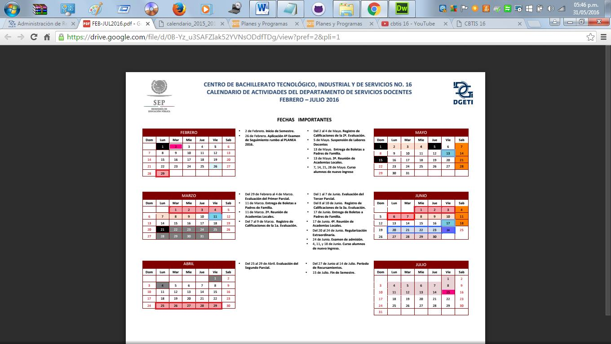

CBTIS 16
"PLANTEL"
*MISION*
Formar personas con conocimientos tecnológicos en las areas industrial, comercial y de servicios, a través de la preparación de profesionales tecnicos y bachilleres, con el fin de contribuir al desarrollo sustentable del país.
*VISION*
Ser una institucion que proporcione una formacion integral y pertinente de acuerdo a las exigencias derivadas de la competitividad mundial y el entorno y vocacion local, ademas de tener la flexibilidad para satisfacer los intereses, aspiraciones y posibilidades de la poblacion que demanda este nivel educativo en nuestro plantel.
"video"
DOCENTES
SERVICIO SOCIAL
SU OBJECTIVO ES
Contribuir a la formación integral del educando, desarrollando en el prestador un alto sentido de solidaridad social y de compromiso con su comunidad y retribuir a la sociedad por su contribución en la formación de los alumnos durante su proceso educativo.
El departamento cuenta con convenios en las dependencias de gobierno, sector salud y juntas auxiliares en donde se cubre el 100% de la demanda de los jóvenes de 5to. Semestre, para que lo terminen de acuerdo a los tiempos establecidos, para esto se realizan platicas en donde se les comenta la importancia y la necesidad de hacerlo, para que se puedan certificar y titular del bachillerato.
Documentos Requeridos:
Original y Copia del Acta de Nacimiento Actualizada (Tamaño Carta)
Folder Color Crema (Tamaño Carta)
Solicitud y Carta compromiso (Firmadas por el alumno)
Carta de Asignación (Firma del responsable y Sello de la institución)
2 Informes Bimestrales (Firma del responsable y Sello de la institución; Carta de aceptación con Firma del alumno)
Informe final con cuartilla de reporte (Firma del responsable y Sello de la institución; Firma del alumno
*PLANES Y PROGRAMAS DE ESTUDIO*
 PLANES Y PROGRAMAS
PLANES Y PROGRAMAS
*CALENDARIO SEP*
 Calendario
Calendario
{kind=link}
*CALENDARIO DE ACTIVIDADES*
 Calendario SEPSERVICIOS ESCOLARES
BECAS
En esta sección se describen los diferentes tipos de becas que otorga la Secretaría de Educación Pública (SEP) a través de la Subsecretaría de Educación Media Superior (SEMS)

GOBIERNO FEDERAL
*EXCELENCIA PROMEDIO
*INGRESO
*PERMANENCIA
*SALARIO PRÁCTICAS PROFESIONALES
*CONTRA EL ABANDONO ESCOLA
GOBIERNO ESTATAL
*OPORTUNIDADES
Vinculación:
Proceso que permite establecer relaciones entre el sector productivo e instituciones de educación y la sociedad, con el objeto de atender necesidades mutuas a través de la participación de todos los actores involucrados en un proceso integral que genere mecanismos de interacción, así como la retroalimentación de los programas de formación de recursos humano, para beneficio del país y el mejoramiento continuo de cada institución.
Departamento de Vinculación con el Sector Productivo:
1. Organizar, coordinar y supervisar las actividades encaminadas a vincular la educación tecnológica con el sector productivo de bienes y servicios, de acuerdo con los lineamientos establecidos por la Dirección General de Educación Tecnológica Industrial.
2. Formular el programa anual de vinculación y proponerlo a la Subdirección Técnica para lo conducente.
3. Integrar el cuadro de necesidades de recursos humanos, financieros y materiales requeridos para el cumplimiento de las labores encomendadas al departamento y presentarlo a la Subdirección Técnica para lo conducente.
4. Elaborar diagnósticos socioeconómicos del área de influencia del plantel y jerarquizar las necesidades de bienes y servicios para determinar su atención.
5. Participar con la dirección del plantel en la celebración de convenios de vinculación del plantel con el sector productivo de bienes y servicios de la región y realizar su seguimiento.
6. Solicitar a la Subdirección Técnica, la participación del personal docente y técnico que se requiera en las acciones de vinculación.
7. Participar en los programas de capacitación y actualización del personal docente y técnico encargado de la vinculación con el sector productivo de bienes y servicios.
8. Establecer y mantener coordinación con instituciones y dependencias que tengan injerencia con el sector productivo de bienes y servicios de la región, a fin de apoyar el programa de vinculación del plantel.
9. Apoyar las acciones encaminadas al desarrollo de las prácticas profesionales y a la prestación del servicio social de los alumnos.
10. Registrar el avance y cumplimiento de los proyectos de vinculación que realice el plantel.
11. Proporcionar, en los términos y plazos establecidos, la información que le sea requerida por la Subdirección Técnica.
12. Expedir las constancias de cumplimiento de prácticas a los alumnos del plantel.
13. Participar en la elaboración del programa operativo anual y el anteproyecto del presupuesto de acuerdo con las normas y procedimientos establecidos por la Dirección General de Educación Tecnológica Industrial.
14. Expedir las constancias de cumplimiento de prácticas a los alumnos del plantel.
15. Mantener comunicación con las demás áreas del plantel para el mejor desempeño de sus funciones.
Mas informes
Director: Ramos Bravo Anselmo
CCT: 21DCT0046
Tel.: (244) 4462940
Dirección: Fracc. Ricardo Flores Magon Domicilio Conocido S/N. Atlixco, Puebla. CP 74240
Correo Electrónico: cbtis016.dir@dgeti.sems.gob.mx
GUSTAVO ROMAN HERNANDEZ
"OFERTA EDUCATIVA"
TÉCNICO EN ADMINISTRACION DE RECURSOS HUMANOS
Elabora y gestiona documentacion administrativa referente a recursos humanos, integra al personal a la organizacion, asiste en actividades de capacitacion, desarrollo y evaluacion del personal, así como determina las remuneraciones al personal.
TECNICO EN PROGRAMACION
TECNICO EN PROGRAMACION
Persona con conocimientos, habilidades y actitudes, capaz de ingresar a empresas de desarrollo de software, diseño grafico, mantenimiento, outsourcing

TECNICO EN ELECTRICIDAD
La carrera de Técnico en Electricidad permite al estudiante sustentar la demanda de ocupacion de Técnicos Electricistas en el sector productivo y de servicios, capaz de diseñar y realizar instalaciones electricas residenciales y comerciales, así como proporcionar mantenimiento a maquinas electricas.
.jpg)
TECNICO EN MECANICA INDUSTRIAL
Profesionista que da mantenimiento a los sistemas de transmision de potencia utilizando las máquinas herramientas convencionales, de control numerico, máquinas de soldar con arco eléctrico y oxigas auxiliándose de los procesos de ajuste de piezas mecánicas.

ESPACIOS QUE OFRECEMOS
*Aulas
*Laboratorio de Quimica
*Laboratorio de Logistica
*Laboratorio de Fisica
*Laboratorio de Computo
*Laboratorio de Ingles
*Taller de Programacion
*Taller de Autimatizacion
*Biblioteca con equipo de computo con servicio de internet
*Edificio de oficinas administrativas

ESPACIOS DEPORTIVOS
*Campos de Futbol.
*Cancha de voleibol
*Canacha de basquetbol
*Plaza Civica